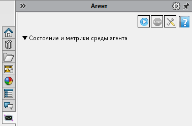
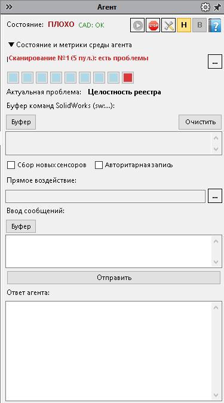

Панель задач «Агент»
Боковая панель SOLIDWORKS — помощник рядом с чертежом или моделью: сводка состояния, метрики, сообщения и воздействия оператора. Работает как адаптер к ядру ISIDA; для реестров и пакетного экспорта панель не обязательна. Команды Старт / Стоп / Настройки те же, что на ленте Velum.
Когда пользоваться
- Нужна — смотреть сводку, писать короткие сообщения, подавать воздействия с пульта, разбирать новые команды/фразы в буфере.
- Не нужна — работа только с реестрами, материалами, свойствами, DXF/PDF: достаточно ленты и диалогов.
admin.

Панель «Агент» до запуска: шапка со значками Старт / Стоп / Настройки / справка и свёрнутый блок «Состояние и метрики среды агента».
Панель за две минуты
- Откройте панель задач «Агент» (если скрыта — через меню панелей SOLIDWORKS / после загрузки надстройки).
- Нажмите Старт (на панели или на ленте). Без Старта сводка и воздействия с пульта обычно не оживают.
- Смотрите шапку: общее состояние и индикатор CAD.
- Ниже — метрики (по желанию), блок текущей проблемы, буфер команд, поле сообщений и ответ.
- Стоп — остановить цикл помощника, когда он больше не нужен.
Зоны панели

Панель после Старт: состояние (здесь «ПЛОХО»), CAD, метрики среды, актуальная проблема, буфер sw:…, прямое воздействие, ввод сообщений и ответ агента. Кнопки Н / В — нормализация и «оживление».
Шапка
- Состояние — общая оценка (например, норма / внимание / плохо). Это сводка для оператора, а не ошибка SOLIDWORKS.
- CAD — связь с текущей сессией SOLIDWORKS (занятость, готовность к командам).
- Статус сканирования реестра — показывает фоновое сканирование реестра изделий. Текст имеет вид
Сканирование №х (х пул.): выполняется…,есть проблемыилипроблем нет. Номер — счётчик итераций, в скобках — периодичность в пульсах (из настроек). Цвет: синий — тик сканирования исполняется в фоновом потоке, красный — найдены проблемы, зелёный — проблем нет. Между тиками (когда фоновый проход завершён, а следующий ещё не наступил) показывается результат: «есть проблемы» или «проблем нет». При открытии документа надпись исчезает. Подсказка при наведении мыши. - Н — вернуть параметры в норму (когда кнопка доступна).
- В — восстановить помощника после остановки по внутренней ошибке («оживить»), если кнопка показана.
- Значки Старт / Стоп / Настройки.
Метрики и проблема
- Сетка метрик работы в среде CAD — справочная; набор настраивается кнопкой … (выбор метрик).
- Блок «Актуальная проблема» — краткий текст, на что помощник обращает внимание сейчас (может быть пустым).
Команды и воздействия
- Буфер команд вида
sw:…: просмотр / очистка; при необходимости — разбор новых записей (буфер новых команд и фраз). - Авторитарная запись — ваши сообщения и команды идут с повышенным приоритетом (удобно, когда нужно «перебить» фон).
- Прямое воздействие — действия оператора с пульта; список выбирается через … (воздействия оператора).
Сообщения
- Поле ввода, буфер отправляемых фраз, кнопка Отправить, область «Ответ агента».
Почему действие с панели «не сработало»
Кнопка нажата, а эффекта нет — чаще всего одно из следующего:
- Не нажат Старт — цикл помощника остановлен; сводка и воздействия не обрабатываются.
- Нажат Стоп или цикл уже завершён — снова Старт.
- Режим наблюдения в настройках — помощник только смотрит, без изменения своего поведения по вашим воздействиям. Снимите флажок, если нужны воздействия с пульта.
- Воздействие недоступно — в списке воздействий часть строк серая: нельзя включить одновременно конфликтующие пункты. Снимите конфликт и примените снова.
- Индикатор CAD — сессия занята или документ не готов; подождите окончания операции SOLIDWORKS.
- Кнопка «В» видна / помощник «завис» — сначала восстановление, затем снова Старт.
- В диалоге экспорта нажали «Запрет» — операция отклонена намеренно; это не сбой панели.
Подробные пороги и режим наблюдения — в настройках проекта. Для обычной работы достаточно путей данных; тонкую регуляцию меняйте только если понимаете эффект.
См. также
- Обзор — когда помощник не нужен
- ISIDA и МВАП
- Лента команд
- Настройки проекта